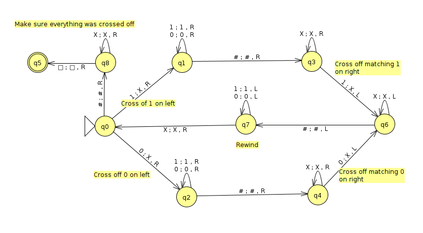
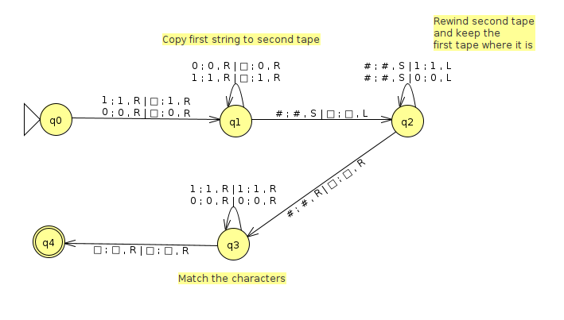
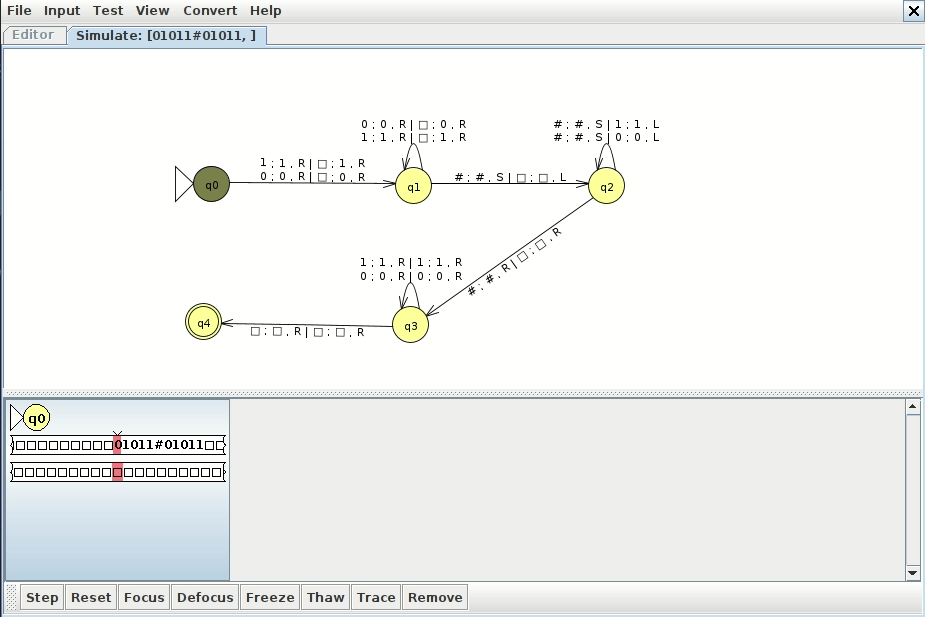
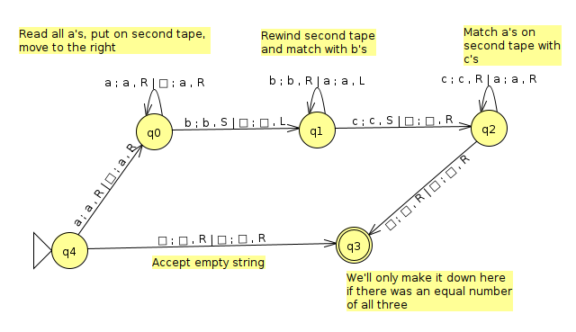
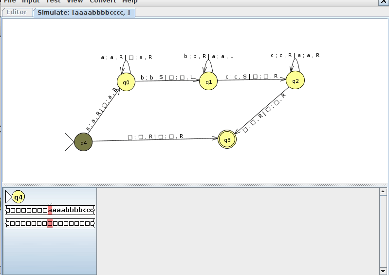

Week 8: Multitape Turing Machine Exmaples
Chris Tralie
We saw in class that it's often much easier to design multitape Turing machines to do the same tasks that single tape Turing machines would do. Below I'll show two examples we talked about:
Example 1: w#w
Consider the language
\[ L = \{ w\text{#}w, w \in \{ 0, 1 \}^* \} \]
We did this already with a single tape Turing machine that bounces from left to right and crosses things off, as shown below
However, there's a much simpler and more intuitive way to do it with a multitape machine, as shown below (click here to download the JFLAP file)
The idea is to copy the string after the # to another tape, and then we can walk from left to right and compare both tapes to each other directly without jumping back and forth. This has the advantage of being much more efficient as well. Below is an example run
Example 2: anbncn
Consider the language
\[ L = \{ a^nb^nc^n, n \geq 0 \} \]
We know by the context free pumping lemma that this language is not context free. We could follow a similar strategy to the w#w to devise a single tape Turing machine to recognize it, but let's make a multitape Turing machine that does this. We came up with a very clever way to do this in class, as shown below (click here to download the JFLAP file)
Below is an example run of this machine on a string in the language where n = 4
